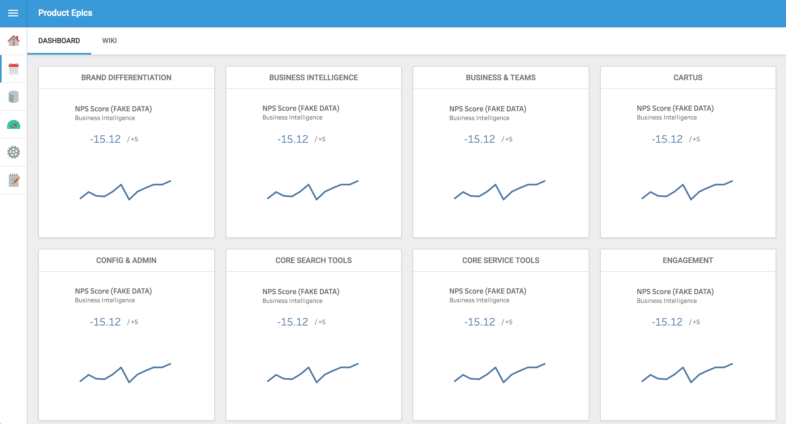

One dashboard system for the entire company.
The Problem
When I arrived at ZapLabs, I was shocked by how convoluted our data infrastructure was and consequently how little people knew about their own data. Product managers oftentimes didn't have up-to-date numbers on their own KPIs, let alone other teams'. Part of my job was reduced to convincing people that data would aid their decision-making process.
Restructuring the entire data infrastructure was infeasible for one person, so I started simpler: I wanted to create dashboards that were more accessible and understandable. Before, we had a dozen dashboards scattered on Tableau that were available only to a few people and were hard to read from a TV screen. So, I sought out to build dashboards that made it easy for people to understand and gain value from their data.
The Process
I began by working with the lead product manager to prioritize key metrics and brainstorm the best way to display them. We ultimately wanted to build a data product that would help people derive insights into product health and from there catalyze action. That's why before I built any dashboard, I would speak with and interview the PM's in charge to better understand their product and metrics.
By building a few dashboards in Tableau myself, I knew that I needed a platform that was not only accessible but also more flexible in engineering. For these reasons, I opted to build a new dashboard system as a web app in Javascript. Instead of building the web app completely from scratch, I found a library built on top of d3.js that came with pre-styled classes that allowed me to focus more on analytics rather than on web design. Development only took a few weeks.
Lastly, after defining the framework, I needed to retrieve and wrangle data from our databases using various API's: Oracle, Google Analytics, and Amazon S3. In particular, I remember retrieving data stored in our S3 data warehouse was a challenge because there were so much data to read in.

The Final Product
Some goals that we had set and fulfilled for our dashboard product included:
- Accessible: Everyone could view these dashboards on their own laptops via a URL. No login required.
- Secure: To ensure that our data is protected, I worked with the IT team to set up the app so that it was only accessible within the company's network.
- Understandable: The metrics should be defined and displayed clearly so people can simply look up to check their stats in real-time.
 This dashboard tracks one key metric for each product team and now serves as a tool to gauge company-wide health. It is populated here with fake data for privacy reasons.
Testing and Impact
ZapLabs was still slowly rolling out the web app when I had left, so I have As I slowly rolled out the dashboard app to product managers and other ZapLabs employees, I used Google Analytics to track app traffic. Website traffic was much higher to this dashboard app than to previous dashboards, by about . I hypothesize that when people are given in the project, they will understand and care more about theKey Takeaways
- Oftentimes, taking the time to build your own custom framework is not worth the effort. In my case, we couldn't use an existing dashboard because of our security requirements, but I did find a pre-built library C3.js that modularized much of the
- However, even then, there were many technical limitations to the project.